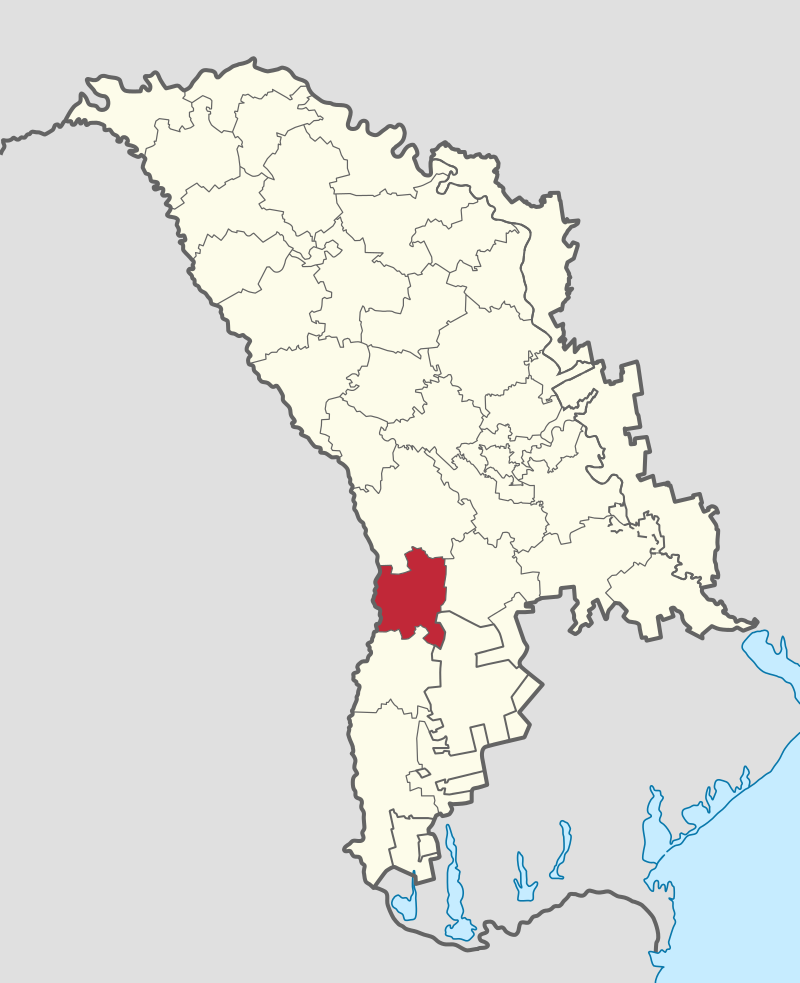
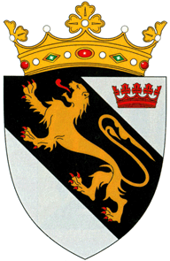

Raionul Leova
 Raionul Leova este amplasat în sud-vestul Republicii Moldova, pe malul stâng al râului Prut şi se învecinează cu raioanele Hînceşti, Cimişlia, Comrat, Cantemir. Raionul Leova are în total 39 de localităţi: oraşul Leova reşedinţă de raion, oraşul Iargara, 23 centre de comună şi 14 sate. Clima raionului Leova este temperat - continentală, influenţată de curenţii nord-vestici, cu variaţii mari ale temperaturii între - 36˚C şi + 40˚C. Media anuală a temperaturii este de aproximativ + 9,5˚C. Verile sunt secetoase, iernile aspre, iar precipitaţiile sunt relativ scăzute.
Raionul Leova cuprinde: 39 localităţi cu 44.702 de locuitori. Cea mai mare parte din ei o constituie moldovenii, care conveţuiesc în bună înţelegere cu ruşii, bulgarii, găgăuzii, nemţii şi romii ce locuiesc pe teritoriul dat. Tinerele generaţii sunt educate şi instruite în cele 70 instituţii de învăţământ şi anume: 4 licee, primul fiind constituit în 1988 ( Liceul „ Constantin Spătaru ”, carui îi aparține pioneratul în implementarea învăţămîntului liceal ), 19 gimnazii, 8 şcoli medii, 36 instituţii preşcolare şi o şcoală profesională. În oraşul de reşedinţă al Consiliului raional Leova mai activează o şcoală de artă, şcoala muzicală cu filiale în alte localităţi şi 2 muzee. Sectorul industrial cuprinde: 5 fabrici de prelucrare a strugurilor, o uzină mecanică (activează la 30%), o fabrică de brânzeturi ( staţionează), o tipografie, 4 brutării. În raion mai activează: 6 oloiniţe, 5 mori de făină de grâu, 6 mori de făină de porumb, 2 linii de prelucrare a cărnii (mezeluri). Perioada de tranziţie la economia de piaţă este marcată şi în raionul Leova prin apariţia întreprinderilor mici şi mijlocii. În prezent, în raion activează 11.666 de agenţi economici: întreprinderi individuale – 587, societăţi cu răspundere limitată– 179, societăţi pe acţiuni – 26, gospodării ţărăneşti – 10.570. Suprafaţa terenului agricol este de 41 mii ha. pe care se cultivă: grâu, porumb, floarea soarelui. În sectorul agrar activează: 7 cooperative agricole de producere, 25 societăţi cu răspundere limitată, 4 societăţi pe acţiuni, 5 întreprinderi mixte, peste 1000 de gospodării ţărănăşti. Nu în ultimul rând putem menţiona resursele naturale valoroase ale raionului: păduri cu o suprafaţă de 100 ha; râuri, cum ar fi Prut, Sărata, Lăpuşna, Tigheci, izvoarele care reprezintă bogăţia raionului. Sub ocrotirea Statului este rezervaţia naturală „ Lebăda Albă ”, ce cuprinde suprafeţe tereste şi acvatice, cu aria totală de 30 km.